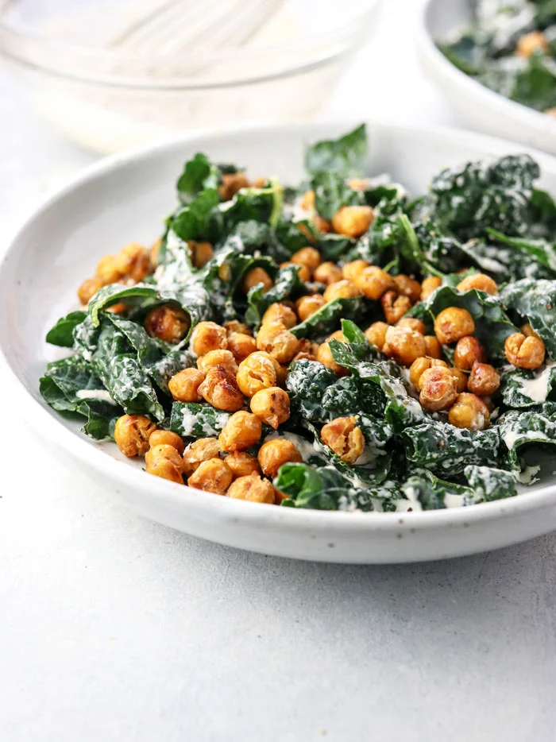

Vegan Kale Caesar Salad

Description
This recipe is one my family and I like to make all time. It's from one of my
favourite vegan recipe websites. It does a good job of mimicking ceasar salad,
but honestly it stands so perfectly on its own. The garlic, tahini, and lemon
combined with the crispy chickpeas make it a rich, indulgent experience. The
ingredients seem reminiscent of the Middle Eeast! Highly recommend as a side,
a main, or even as a topping on dishes such as burgers.
The link for the official recipe is here, but I am going to provide the instructions
for the way I make it after years of habit.
Ingredients
- 1 head of kale
- 1 can chickpeas
- 1/4 cup tahini
- 1/4 cup water
- 2 cloves garlic
- 2 tbsp lemon juice
- 1 tsp mustard (prefer grainy)
- 1/4 tsp salt + more to taste
- Pepper to taste
- 2 tbsp. cooking oil (olive, coconut, etc.)
Steps
- Preheat oven to 400 degrees F.
- Drain chickpeas, toss in cooking oil and distribute evenly on baking sheet.
- Bake chickpeas for 40 minutes.
- While chickpeas are baking, start your dressing by mincing the garlic. Let's be honest, why not use more than two cloves.
- Mix all salad dressing ingredients together in a large bowl.
You may need to ajust ingredient proportions based on the size of your kale.
- Cut the stems off of each kale leaf and shred the leaves into bite-size pieces.
- Toss the kale in the salad dressing and set aside to marinate in the fridge.
- Once the chickpeas are done, toss in salad and serve.